배우기 전에 먼저 해 보세요. 틀려도 괜찮아요.
Wofür interessierst du dich?는 무엇을 묻는 말일까요?
sich interessieren für는 '~에 관심이 있다'예요.
Herr Schneider ist gerade nicht da.라는 말을 들었어요. 알맞은 말은 무엇일까요?
자리에 없으면 메시지를 남겨요.
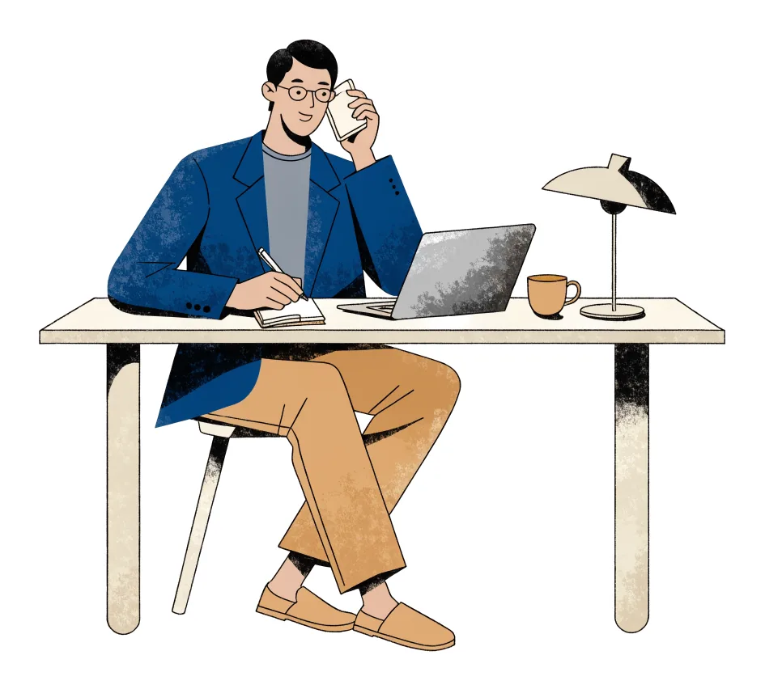
독일어로 전화하는 일은 얼굴을 보고 말하는 것보다 어려워요. 상대가 자리에 없으면 메시지를 남겨야 하고, 궁금한 것은 메일로 물어야 해요. 이 과에서는 전화와 메일에서 쓰는 말을 익히고, warten auf, sich interessieren für처럼 전치사와 짝을 이루는 동사를 배워요.
문법 Verben mit Präpositionen (warten auf, sich interessieren für, sich freuen auf), Wofür? Worauf?, reflexive Verben
과제대학어학 과정에 대해 메일로 문의하기
과제직장거래처에 전화해 메모 남기기
이 과를 마치면 전화로 문의하고 메시지를 남기고, 메일을 쓰고 답하고, 관심 있는 것을 말할 수 있어요.
이 과에서 쓸 말이에요. 눌러서 먼저 들어 보세요.
배우기 전에 먼저 해 보세요. 틀려도 괜찮아요.
Wofür interessierst du dich?는 무엇을 묻는 말일까요?
sich interessieren für는 '~에 관심이 있다'예요.
Herr Schneider ist gerade nicht da.라는 말을 들었어요. 알맞은 말은 무엇일까요?
자리에 없으면 메시지를 남겨요.
Lektion 2의 낱말 다섯 개를 다시 떠올려 보세요.
3월의 월요일 오전이에요. Jiu는 4월에 대학 공부를 시작해요. 대학 어학 센터에 전화해서 독일어 과정을 물어봐요.
들으면서 찾아보세요. Jiu는 과정에 등록하기 전에 무엇을 해야 하나요?
수요일 오후, 사무실이에요. Dohyun이 거래처의 Herr Schneider에게 전화했는데 다른 직원이 받아요.
들으면서 찾아보세요. Dohyun은 무엇을 기다리고 있나요?
어학원 수업 시간이에요. 오늘은 관심 있는 것에 대해 이야기해요. Frau Becker가 Sora에게 물어요.
들으면서 찾아보세요. Sora는 무엇을 꿈꾸나요?
세 대화를 듣고 답하세요.
Jiu는 어느 과정에 관심이 있나요?
Jiu는 과정에 등록하기 전에 무엇을 해야 하나요?
Der Kurs ist für Studierende kostenlos.
Herr Schneider는 왜 전화를 받지 못하나요?
Dohyun은 무엇을 기다리고 있나요?
Herr Schneider soll Dohyun zurückrufen.
Sora는 무엇에 관심이 있나요?
Sora freut sich auf den Winter.
봄을 기다리고 있어요.
낱말 47개예요. 낱말이나 예문 앞의 단추를 누르면 소리가 나요. 명사는 der, die, das를 색으로 구분했어요.
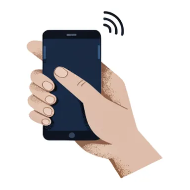
der Anruf, die Anrufe 전화 통화
Danke für Ihren Anruf.전화 주셔서 감사합니다.
zurückrufen (hat zurückgerufen) 다시 전화하다
Können Sie mich zurückrufen?다시 전화해 주실 수 있나요?
verbinden (hat verbunden) (전화를) 연결하다
Ich verbinde Sie mit Herrn Schneider.Herr Schneider에게 연결해 드릴게요.
erreichen (hat erreicht) 연락이 닿다
Sie erreichen mich bis siebzehn Uhr.17시까지 저와 통화하실 수 있어요.
besetzt 통화 중인
Die Nummer ist besetzt.그 번호는 통화 중이에요.
die Nachricht, die Nachrichten 전하는 말, 메시지
Ich habe eine Nachricht für Sie.전해 드릴 말씀이 있어요.
hinterlassen (du hinterlässt, hat hinterlassen) (말을) 남기다
Ich möchte eine Nachricht hinterlassen.메시지를 남기고 싶어요.
ausrichten (hat ausgerichtet) (말을) 전해 주다
Kann ich ihm etwas ausrichten?그분께 전해 드릴 말씀이 있으세요?
die Mailbox 음성 사서함
Ich habe auf die Mailbox gesprochen.음성 사서함에 말을 남겼어요.
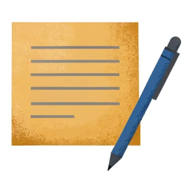
die Notiz, die Notizen 메모
Ich schreibe eine Notiz.메모를 써요.
sich melden (hat sich gemeldet) 연락하다
Ich melde mich morgen wieder.내일 다시 연락드릴게요.
gerade 지금 막, 마침
Er telefoniert gerade.그분은 지금 통화 중이에요.
einverstanden 받아들이는, 좋다고 하는
Ich bin einverstanden.저는 좋아요.
Worum geht es? 무슨 일 때문인가요?
Worum geht es genau?정확히 무슨 일 때문인가요?
Es geht um … ~ 때문이에요, ~에 대한 일이에요
Es geht um das Angebot.제안서 때문이에요.
die Anfrage, die Anfragen 문의
Vielen Dank für Ihre Anfrage.문의해 주셔서 감사합니다.
der Betreff (메일의) 제목
Im Betreff steht das Thema.제목에는 용건을 써요.
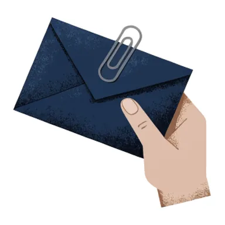
der Anhang, die Anhänge 첨부 파일
Das Formular ist im Anhang.서식은 첨부 파일에 있어요.
die Antwort, die Antworten 답
Ich warte auf Ihre Antwort.답을 기다리고 있어요.
die Information, die Informationen 정보
Ich brauche Informationen zum Kurs.과정에 대한 정보가 필요해요.
sich anmelden (hat sich angemeldet) 등록하다, 신청하다
Ich möchte mich für den Kurs anmelden.그 과정에 등록하고 싶어요.
teilnehmen (du nimmst teil, hat teilgenommen) 참가하다
Ich möchte an dem Kurs teilnehmen.그 과정에 참가하고 싶어요.
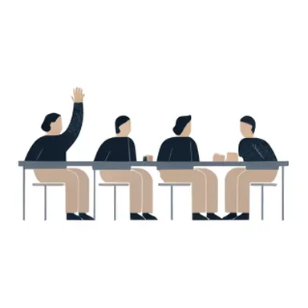
der Teilnehmer, die Teilnehmer 참가자
Der Kurs hat zwölf Teilnehmer.그 과정은 참가자가 열두 명이에요.
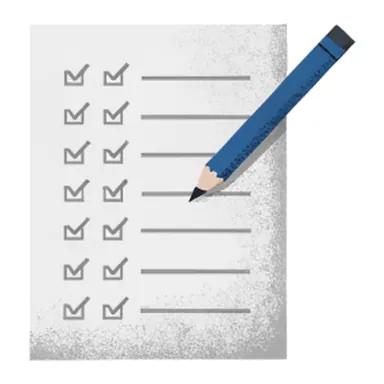
der Einstufungstest, die Einstufungstests 반 편성 시험
Vor dem Kurs machen Sie einen Einstufungstest.과정을 시작하기 전에 반 편성 시험을 봐요.
die Stufe, die Stufen 단계
Welche Stufe ist richtig für mich?저한테는 어느 단계가 맞아요?
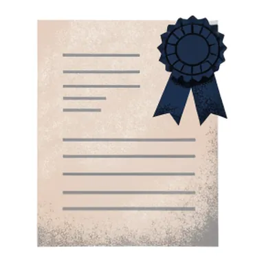
das Zertifikat, die Zertifikate 수료증, 자격증
Am Ende bekommen Sie ein Zertifikat.끝나면 수료증을 받아요.
stattfinden (hat stattgefunden) 열리다
Der Kurs findet am Abend statt.그 과정은 저녁에 열려요.
weiterleiten (hat weitergeleitet) (메일을) 전달하다
Ich leite die E-Mail weiter.그 메일을 전달할게요.
sich bedanken (hat sich bedankt) 고맙다고 하다
Ich bedanke mich für Ihre Hilfe.도와주셔서 감사합니다.
vorher 그 전에, 먼저
Vorher machen Sie einen Test.그 전에 시험을 봐요.
sich interessieren (hat sich interessiert) 관심이 있다
Ich interessiere mich für Design.저는 디자인에 관심이 있어요.
sich freuen (hat sich gefreut) 기뻐하다, 기대하다
Ich freue mich auf den Sommer.저는 여름을 기다리고 있어요.
sich ärgern (hat sich geärgert) 화가 나다, 속상해하다
Ich ärgere mich über die Verspätung.늦어서 화가 나요.
sich kümmern (hat sich gekümmert) 돌보다, 맡아서 하다
Ich kümmere mich um die Kinder.저는 아이들을 돌봐요.
sich vorbereiten (hat sich vorbereitet) 준비하다
Ich bereite mich auf die Prüfung vor.저는 시험을 준비해요.
sich erinnern (hat sich erinnert) 기억하다
Ich erinnere mich an den Urlaub.그 휴가가 기억나요.
träumen (hat geträumt) 꿈꾸다
Ich träume von einem Haus am Meer.저는 바닷가의 집을 꿈꿔요.
der Traum, die Träume 꿈
Das ist ein schöner Traum.멋진 꿈이에요.
die Angst, die Ängste 무서움, 걱정
Ich habe Angst vor der Prüfung.저는 시험이 걱정돼요.
das Interesse, die Interessen 관심
Ich habe viele Interessen.저는 관심 있는 것이 많아요.
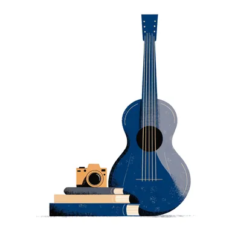
das Hobby, die Hobbys 취미
Mein Hobby ist Fotografieren.제 취미는 사진 찍기예요.
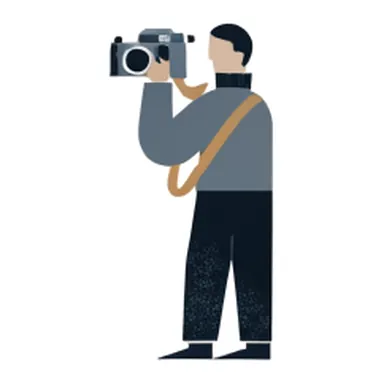
die Fotografie 사진, 사진 찍기
Ich interessiere mich für Fotografie.저는 사진에 관심이 있어요.
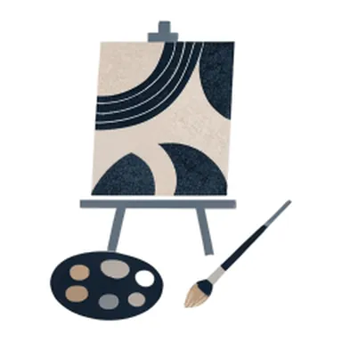
die Kunst 예술, 미술
Sora mag Kunst.Sora는 미술을 좋아해요.
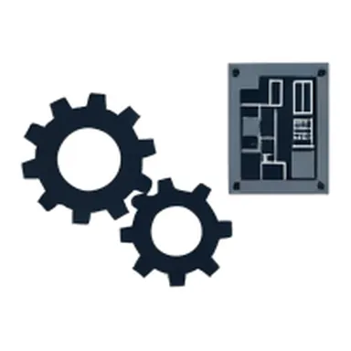
die Technik 기술
Dohyun interessiert sich für Technik.Dohyun은 기술에 관심이 있어요.
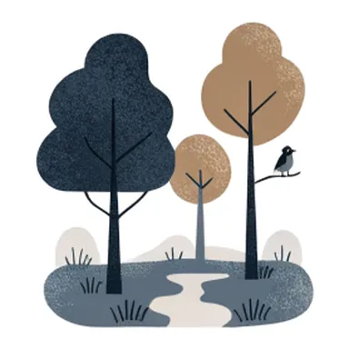
die Natur 자연
Ich bin gern in der Natur.저는 자연 속에 있는 걸 좋아해요.
Wofür? 무엇에, 무엇을 위해
Wofür interessierst du dich?무엇에 관심이 있어요?
Worauf? 무엇을
Worauf wartest du?무엇을 기다려요?
이 과의 낱말로 여덟 문제를 풀어요.
줄을 누르면 소리가 나요. 동사와 전치사를 한 덩어리로 익혀요.
규칙
많은 동사는 정해진 전치사와 함께 써요. 어느 전치사가 오는지는 동사마다 정해져 있어서 동사와 함께 외워야 해요. 아래 동사들의 전치사 뒤에는 Akkusativ가 와요.
| 동사 | 전치사 | 뜻 |
|---|---|---|
| warten | auf | ~을 기다리다 |
| sich freuen | auf | ~을 기대하다 |
| sich interessieren | für | ~에 관심이 있다 |
| sich bedanken | für | ~에 고마워하다 |
| denken | an | ~을 생각하다 |
| sich ärgern | über | ~에 화가 나다 |
| sich kümmern | um | ~을 돌보다 |
주의 sich freuen은 전치사에 따라 뜻이 달라져요. 앞으로 올 일에는 auf, 지금 일어난 일이나 받은 것에는 über를 써요. Ich freue mich auf den Urlaub. Ich freue mich über das Geschenk.
규칙을 보고 바로 확인해 보세요.
Wir freuen uns … das Wochenende. 빈칸에 알맞은 말은 무엇인가요?
규칙
몇몇 동사는 전치사 뒤에 Dativ가 와요. von과 mit은 늘 Dativ와 쓰는 전치사예요. teilnehmen an과 Angst haben vor도 Dativ와 써요.
| 동사 | 전치사 | 뜻 |
|---|---|---|
| träumen | von | ~을 꿈꾸다 |
| sprechen | mit | ~와 이야기하다 |
| telefonieren | mit | ~와 통화하다 |
| teilnehmen | an | ~에 참가하다 |
| Angst haben | vor | ~을 무서워하다 |
주의 sprechen은 전치사 둘을 함께 쓸 수 있어요. 누구와 말하는지는 mit, 무엇에 대해 말하는지는 über로 써요. Ich spreche mit der Lehrerin über den Kurs.
규칙을 보고 바로 확인해 보세요.
Ich habe Angst … der Prüfung. 빈칸에 알맞은 말은 무엇인가요?
규칙
전치사와 짝을 이루는 동사로 물을 때는 전치사가 질문하는 말에 들어가요. 물건이나 일을 물을 때는 wo와 전치사를 붙여요. 전치사가 모음으로 시작하면 가운데에 r을 넣어요. 사람을 물을 때는 전치사 뒤에 wen이나 wem을 써요.
| 전치사 | 물건, 일 | 사람 |
|---|---|---|
| für | Wofür? | Für wen? |
| auf | Worauf? | Auf wen? |
| an | Woran? | An wen? |
| über | Worüber? | Über wen? |
| von | Wovon? | Von wem? |
| mit | Womit? | Mit wem? |
주의 답할 때도 전치사를 꼭 넣어요. Worauf freust du dich? Auf den Sommer. 전화에서 자주 듣는 Worum geht es?는 무슨 일로 전화했는지 묻는 말이고, Es geht um …으로 답해요.
규칙을 보고 바로 확인해 보세요.
… denkst du? An den Urlaub. 빈칸에 알맞은 말은 무엇인가요?
규칙
A2.1에서 배운 sich가 따라오는 동사 가운데에는 전치사까지 함께 쓰는 것이 많아요. sich는 주어에 맞게 mich, dich, sich, uns, euch로 바꾸고, 그 뒤에 전치사와 명사를 써요.
| 주어 | 동사 | sich | 나머지 |
|---|---|---|---|
| Ich | freue | mich | auf den Urlaub. |
| Du | ärgerst | dich | über den Zug. |
| Er | kümmert | sich | um die Kinder. |
| Wir | melden | uns | für den Kurs an. |
주의 조동사가 있으면 mich, dich, sich는 조동사 바로 뒤에 와요. Ich möchte mich anmelden. Sie müssen sich bis Freitag anmelden. sich melden은 '연락하다'라는 뜻이에요. Ich melde mich morgen.
규칙을 보고 바로 확인해 보세요.
Wir kümmern … um die Gäste. 빈칸에 알맞은 말은 무엇인가요?
듣고 알맞은 것을 고르세요.
Jiu는 무엇에 관심이 있나요?
Ich interessiere mich für den Deutschkurs am Abend.
Dohyun은 무엇을 하려고 하나요?
Kann ich bitte eine Nachricht für Herrn Schneider hinterlassen?
Sora는 무엇을 기다리고 있나요?
Ich freue mich auf den Frühling.
Markus는 누구를 기다리고 있나요?
Ich warte seit einer Stunde auf den Handwerker.
Herr Schneider가 Dohyun의 음성 사서함에 말을 남겼어요. 듣고 알맞은 것을 고르세요.
Auf der Mailbox
Herr Schneider Guten Tag, Herr Park, hier ist Schneider.
Herr Schneider Vielen Dank für Ihren Anruf. Ich habe Ihr Angebot gelesen und bin einverstanden.
Herr Schneider Ich habe aber noch eine Frage zum Preis. Können Sie mich bitte morgen Vormittag zurückrufen?
Herr Schneider Sie erreichen mich von neun bis zwölf Uhr im Büro. Auf Wiederhören!
Herr Schneider는 제안서를 어떻게 생각하나요?
Wozu hat Herr Schneider noch eine Frage?
Wann soll Dohyun zurückrufen?
어학 센터에서 Jiu에게 보낸 답장이에요. 읽고, 맞으면 richtig, 틀리면 falsch를 고르세요.
Ihre Anfrage: Deutschkurs B1
Sehr geehrte Frau Kim,
vielen Dank für Ihr Interesse an unserem Kurs.
Der Kurs B1 findet am Dienstag und Donnerstag von 18 bis 20 Uhr statt. Er beginnt am 13. April und dauert zwölf Wochen.
Bitte machen Sie vor der Anmeldung den Einstufungstest. Den Link finden Sie im Anhang.
Sie können sich bis zum 1. April online anmelden.
Wir freuen uns auf Ihre Anmeldung.
Mit freundlichen Grüßen
Petra Meyer
Der Kurs findet zweimal pro Woche statt.
Der Kurs beginnt am 1. April.
4월 13일에 시작해요. 4월 1일은 등록을 마쳐야 하는 날이에요.
Der Kurs dauert zwölf Wochen.
Man macht den Einstufungstest nach der Anmeldung.
등록하기 전에 봐요.
Der Link ist im Anhang.
동사와 짝을 이루는 전치사를 고르세요.
Ich warte den Bus.
저는 버스를 기다려요.
Jiu interessiert sich den B1-Kurs.
Jiu는 B1 과정에 관심이 있어요.
Wir freuen uns das Wochenende.
우리는 주말을 기다리고 있어요.
Sora denkt oft ihre Eltern.
Sora는 부모님을 자주 생각해요.
Dohyun ärgert sich die Verspätung.
Dohyun은 늦어서 화가 나요.
Ich träume einem Haus am Meer.
저는 바닷가의 집을 꿈꿔요.
Ich bedanke mich Ihre Hilfe.
도와주셔서 감사합니다.
답을 보고 알맞은 질문 말을 고르세요.
interessierst du dich? Für Musik.
무엇에 관심이 있어요? 음악이요.
wartest du? Auf die E-Mail.
무엇을 기다려요? 메일이요.
denkst du? An den Urlaub.
무슨 생각을 해요? 휴가 생각이요.
ärgerst du dich? Über das Wetter.
무엇 때문에 화가 나요? 날씨 때문에요.
wartest du? Auf Lena.
누구를 기다려요? Lena요.
주어에 맞는 말을 고르세요.
Ich interessiere für Technik.
저는 기술에 관심이 있어요.
Freust du auf den Kurs?
그 과정이 기다려져요?
Jiu meldet heute noch an.
Jiu는 오늘 바로 등록해요.
Wir kümmern um die Gäste.
우리는 손님들을 챙겨요.
Herr Schneider meldet morgen.
Herr Schneider가 내일 연락할 거예요.
낱말을 순서대로 눌러 문장을 만드세요.
저는 그 과정에 관심이 있어요.
무엇에 관심이 있으세요?
답을 기다리고 있어요.
다시 전화해 주실 수 있나요?
메시지를 남기고 싶어요.
동사와 짝을 이루는 전치사를 짝지으세요.
빈칸에 알맞은 낱말을 쓰세요.
Kann ich eine hinterlassen?
메시지를 남길 수 있을까요?
Das Formular finden Sie im .
서식은 첨부 파일에 있어요.
Ich möchte mich für den Kurs .
그 과정에 등록하고 싶어요.
Können Sie mich bitte ?
다시 전화해 주실 수 있나요?
듣고 그대로 써 보세요.
Ich interessiere mich für den Kurs. 저는 그 과정에 관심이 있어요.
Ich warte auf Ihre Antwort. 답을 기다리고 있어요.
Ich freue mich auf den Frühling. 저는 봄을 기다리고 있어요.
Guten Tag, hier ist Park von Kessler Technik. 안녕하세요, Kessler Technik의 Park입니다.
Kann ich bitte Herrn Schneider sprechen? Herr Schneider와 통화할 수 있을까요?
Es geht um das Angebot. 제안서 때문에 전화했어요.
Ich rufe später noch einmal an. 나중에 다시 전화할게요.
Kann ich eine Nachricht hinterlassen? 메시지를 남길 수 있을까요?
Er soll mich bitte zurückrufen. 저한테 다시 전화해 달라고 전해 주세요.
Sie erreichen mich bis siebzehn Uhr. 17시까지 저와 통화하실 수 있어요.
Ich warte auf seine Antwort. 그분의 답을 기다리고 있어요.
Kessler Technik, Park, guten Tag. Kessler Technik의 Park입니다, 안녕하세요.
Herr Weber ist gerade nicht da. Herr Weber는 지금 자리에 없어요.
Kann ich ihm etwas ausrichten? 전해 드릴 말씀이 있으세요?
Wie war Ihr Name, bitte? 성함이 어떻게 되신다고 하셨죠?
Ich interessiere mich für den Kurs. 그 과정에 관심이 있습니다.
Können Sie mir Informationen schicken? 정보를 보내 주실 수 있나요?
Bis wann muss ich mich anmelden? 언제까지 등록해야 하나요?
Ich freue mich auf Ihre Antwort. 답을 기다리겠습니다.
Wofür interessierst du dich? 무엇에 관심이 있어요?
Ich interessiere mich für Fotografie. 저는 사진에 관심이 있어요.
Ich freue mich auf den Sommer. 저는 여름을 기다리고 있어요.
Ich ärgere mich über die Verspätung. 늦어서 화가 나요.
과제 고르기
역할 대화와 말하기, 쓰기 과제는 대학 생활과 직장 생활 두 가지예요. 하나를 고르면 다음 과에서도 그쪽 과제가 나와요. 언제든 바꿀 수 있어요.
대화 A에서 역할을 하나 고르세요. 상대의 말은 음성으로 나오고, 내 차례에는 직접 말해요.
대화 B에서 역할을 하나 고르세요. 상대의 말은 음성으로 나오고, 내 차례에는 직접 말해요.
내가 관심 있는 것을 떠올리고 칸을 채우세요. 전치사와 함께 써요. 완성된 문장을 소리 내어 읽어 보세요.
Ich interessiere mich für Fotografie.
Ich freue mich auf den Sommer.
Ich denke oft an meine Familie.
Ich träume von einer Reise nach Island.
대학 어학 센터의 누리집에서 「Deutsch B2 für das Studium」 과정을 봤어요. 궁금한 것이 있어서 먼저 전화로 물어봐요.
나는 4월부터 프랑크푸르트 대학에서 공부해요. 지금 독일어는 B1 단계예요. 과정이 언제 열리는지, 값이 얼마인지, 언제까지 등록해야 하는지 알고 싶어요.
어학 센터 직원이 물어요. 쪽지를 보고 답하세요. 질문을 듣고 소리 내어 답한 뒤 예시 답과 비교해 보세요.
Sprachenzentrum, guten Tag. Was kann ich für Sie tun? 어학 센터입니다, 안녕하세요. 무엇을 도와드릴까요?
Guten Tag, hier ist Minji Choi. Ich interessiere mich für den Kurs Deutsch B2 für das Studium.
Gern. Studieren Sie schon bei uns? 네. 벌써 우리 대학에 다니세요?
Ich fange im April mit dem Studium an.
Und welche Stufe haben Sie im Moment? 지금은 어느 단계세요?
Im Moment habe ich die Stufe B1.
Dann passt der Kurs. Haben Sie noch Fragen? 그럼 그 과정이 맞겠네요. 더 궁금한 것이 있으세요?
Ja. Können Sie mir sagen, wann der Kurs stattfindet und was er kostet?
Am Montag und Mittwoch von sechzehn bis achtzehn Uhr. Für Studierende ist er kostenlos. 월요일과 수요일 16시부터 18시까지예요. 학생은 무료예요.
Sehr gut. Und bis wann muss ich mich anmelden?
Eine Anfrage an das Sprachenzentrum
전화가 연결되지 않았다고 생각하고, 같은 내용을 메일로 물어보세요. 여섯 문장이면 충분해요.
Sehr geehrte Damen und Herren, mein Name ist Minji Choi, und ich fange im April mit dem Studium in Frankfurt an. Ich interessiere mich für den Kurs Deutsch B2 für das Studium. Im Moment habe ich die Stufe B1. Können Sie mir sagen, wann der Kurs stattfindet und was er kostet? Ich möchte auch wissen, bis wann ich mich anmelden muss. Ich freue mich auf Ihre Antwort. Mit freundlichen Grüßen, Minji Choi
다 쓴 뒤에 확인해 보세요.
거래처의 Frau Sommer에게 전화했는데 자리에 없어요. 전화를 받은 직원에게 메시지를 남겨요.
용건은 다음 주 화요일 회의예요. 시간을 10시에서 14시로 바꾸고 싶어요. Frau Sommer가 오늘 안에 다시 전화해 주면 좋겠어요. 나는 16시까지 사무실에 있어요.
거래처 직원이 전화를 받아요. 쪽지를 보고 답하세요. 질문을 듣고 소리 내어 답한 뒤 예시 답과 비교해 보세요.
Firma Nordlicht, Peters, guten Tag. Nordlicht의 Peters입니다, 안녕하세요.
Guten Tag, hier ist Minji Choi von Kessler Technik. Kann ich bitte Frau Sommer sprechen?
Frau Sommer ist leider gerade nicht da. Kann ich ihr etwas ausrichten? Frau Sommer는 지금 자리에 없어요. 전해 드릴 말씀이 있으세요?
Ja, bitte. Es geht um die Besprechung am Dienstag.
Ja? Was soll ich ihr sagen? 네, 뭐라고 전해 드릴까요?
Ich möchte die Besprechung von zehn Uhr auf vierzehn Uhr verschieben.
Gut, ich schreibe es auf. Soll sie Sie zurückrufen? 알겠습니다, 적을게요. 다시 전화드리라고 할까요?
Ja, bitte, heute noch. Sie erreichen mich bis sechzehn Uhr im Büro.
In Ordnung. Ich richte es ihr aus. 알겠습니다. 전해 드릴게요.
Vielen Dank für Ihre Hilfe. Auf Wiederhören!
Eine Telefonnotiz
이번에는 내가 전화를 받았어요. 동료 Markus를 찾는 전화였는데 Markus는 자리에 없어요. Markus에게 남길 메모를 써 보세요. 다섯 문장이면 충분해요.
Hallo Markus, Frau Sommer von der Firma Nordlicht hat heute um 11 Uhr angerufen. Es geht um die Lieferung vom Montag. Sie wartet noch auf die Rechnung. Bitte ruf sie heute bis 16 Uhr zurück. Ihre Nummer ist 069 90009-377. Viele Grüße, Minji
다 쓴 뒤에 확인해 보세요.
Ich kann am Telefon nach einer Person fragen und eine Nachricht hinterlassen.전화로 사람을 찾고 메시지를 남길 수 있어요.
Ich kann eine Telefonnotiz schreiben.전화 메모를 쓸 수 있어요.
Ich kann per E-Mail nach Informationen fragen.메일로 정보를 물어볼 수 있어요.
Ich kann sagen, wofür ich mich interessiere und worauf ich mich freue.무엇에 관심이 있고 무엇을 기다리는지 말할 수 있어요.